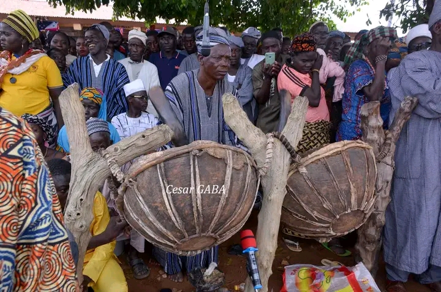
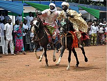

Lors de la Gaani, si le Roi de Nikki est indisposé, c'est soit roi de Bouè, ou celui de Kika ou encore celui de Sandilo qui ont l'habileté de le remplacer pour les rituels. Cela est dû au fait que ces royaumes ont été fondés par les frères du fondateur du royaume de Nikki (Ils sont appelés les SINA WONONBU).
II - La Kayessi
Lors de la Kayessi, on coiffe les princes et les princesses pour leur donner un nom. La cérémonie de rasage est une sorte de baptême traditionnel. C'est la princesse Gnon Kogui, la sœur du Roi qui parraine la séance de rasage. Elle a son palais et c'est elle qui détient le couteau qui sert à raser. Les Raseurs sont appelés Wanzan. C'est à la couleur de la peau et au caractère de l'enfant qu'on lui donne son nom. Ces noms sont réservés seulement aux wassangari. Pour les garçons, ce sont : Simé, Yarou, Dafia, Gounou, Mora, Kora, Séro, Saka … Pour les filles, il y a kpagnéro, Gnanki, Manou, Gaunigui (femme claire), Bèkègui, Gariya, Gniré … La cérémonie de rasage peut avoir lieu lors des cérémonies foraines de rasage.
Le jour de la Kayessi, les différents Rois et les dignitaires viennent saluer le Roi de Nikki. Il y a plusieurs manières de saluer le Roi :
- il y en a qui rampent d'abord 3 fois avant de se coucher complètement ;
- d'autres s'accroupissent ;
- certains lui donnent dos ;
- pour le saluer, le chef des peulh reste debout.
- Le ministre de la défense, Sounon Tooto, le salue en pointant une flèche dans la direction du Roi. Une personne s'interpose entre eux en offrant son corps pour défendre celui du Roi.
Après la cérémonie de salutations, c'est la fête dans toute la ville.
Photos et vidéos de la célébration de la gaani
Les tambours sacrés de la cour royale de Nikki
GAANI 2024: Deux chevaliers dur l'arène de la course

GAANI 2024: Un chevalier en pleine course

Un chevalier en pleine parade à la cour royale

Des griots en train de faire l'éloge du roi avec les trompettes

Premier ministre "SINA DOUNWIRU" à la cour royale

Le premier ministre sur son cheval pour le parcours des lieux sacrés

Le cheval répondant aux pas de danse du gongonier